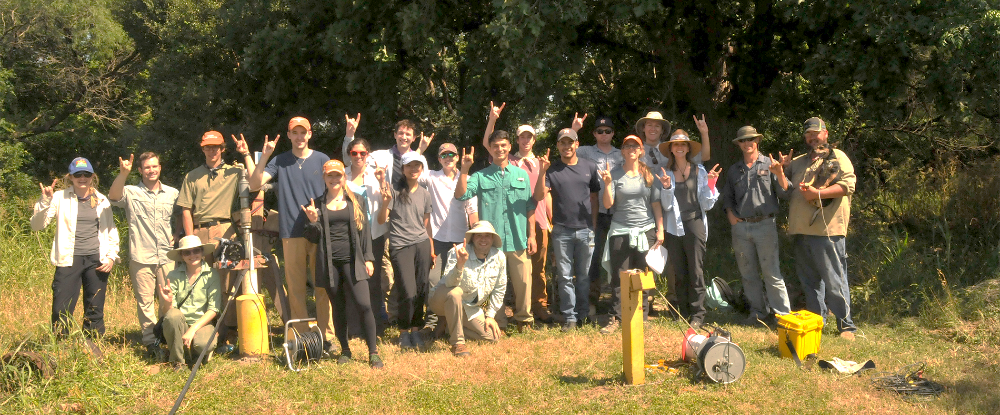

Teaching & Field Courses
The outdoor learning center hosts a variety of hands on education opportunities


Courses at WFOLC
Several courses offered through the Jackson School have field components that take place at WFOLC, including:
- Hydro Field Camp
- Ecohydrology
- GEO 401
- Geophysics Seismic Reflection Demonstration